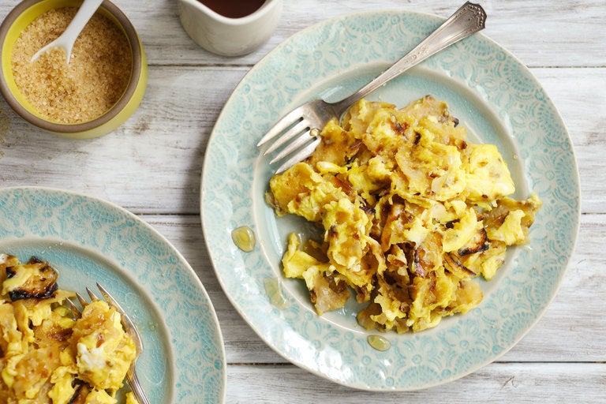

Fried Matzah

Fried Matzah or Matzo brei is a delicious breakfast treat of Matzo that is soaked in a batter of milk and egg and then pan fried. It is often served with fruit preserves.
Ingredients
- Matzo (whole wheat holds up best to soaking)
- 2 eggs
- 1 cup milk
- 4 tbsp butter
- Strawberry preserves
Steps
- Break piece of matzah in half and put it in colander. Lightly run hot water over matzah to soften.
- Melt butter in a saucepan over medium heat.
- Whisk togther 2 eggs and 1 cup of milk. Pour into a shallow flat container, slightly larger than the pieces of matzah.
- Take the matzah out of the colander and place in the egg-milk mixture. Soak for 30 seconds to a minute.
- Take a new piece of matzah and soften it with water.
- Put the matzah in the pan and fry until golden brown.
- Repeat the process as desired until you've fried as much matzah as you'd like.
- Serve with a dollop of strawberry preserves.